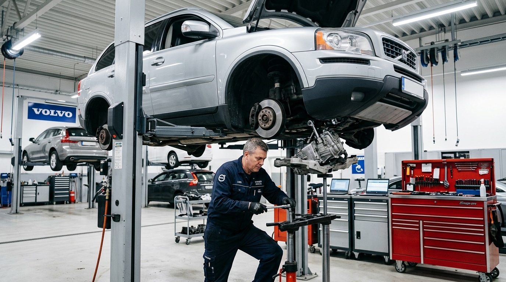
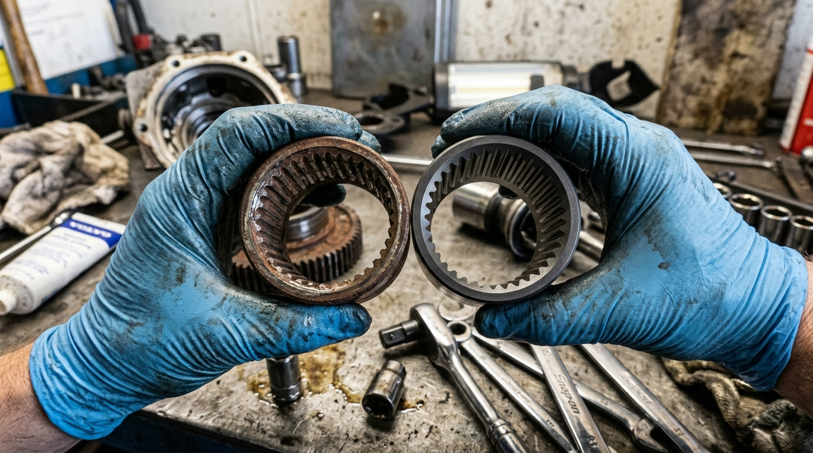
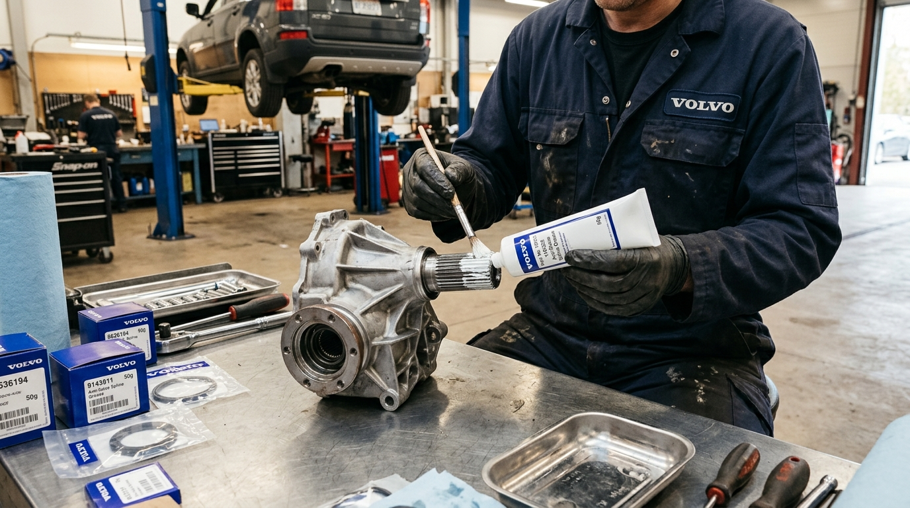

Пропал полный привод на Volvo XC90: замена срезанной втулки угловой передачи

Жалоба клиента: машина буксует передом, а ошибок на приборной панели нет
В наш техцентр обратился постоянный клиент на Volvo XC90 2.5T AWD с пробегом 178 000 км. При попытке припарковаться в сугробе автомобиль неожиданно застрял: передние колеса беспомощно шлифовали лед, в то время как задняя ось даже не пыталась подключиться. При резком старте со светофора со стороны моторного отсека раздавался кратковременный глухой металлический скрежет.
Что особенно насторожило владельца — на панели приборов не горело ни одной ошибки. Ни Check Engine, ни значка противобуксовочной системы ESP, ни сообщений по AWD не появлялось.
Диагностика на подъемнике: коварная «невидимая» поломка
Мы подняли кроссовер на подъемнике и сразу провели простой механический тест:
- Механик попытался вручную провернуть карданный вал при заглушенном двигателе в положении селектора «P».
- Кардан свободно крутился от руки на 360 градусов! При этом выходной вал АКПП оставался неподвижным.
- Сканирование через Volvo VIDA подтвердило: модуль DEM исправен, насос Haldex качает давление, но кардан попросту не получает крутящий момент от коробки передач.
Вердикт однозначный: срезало шлицы соединительной втулки угловой передачи (углового редуктора).
Почему срезает шлицы втулки на автомобилях Volvo?
Крутящий момент от коробки передач передается на угловой редуктор через специальную шлицевую муфту (втулку). Конструктивный просчет этого узла заключается в том, что полость шлицев со временем подвергается фреттинг-коррозии: дорожная влага и московские реагенты проникают через уплотнения, заводская смазка высыхает, и сухие шлицы начинают интенсивно ржаветь.
Ржавчина превращает металл шлицев в бурую труху. Зубья истончаются, и при очередной ударной нагрузке (пробуксовка на льду, резкий старт) их полностью «слизывает». Втулка внутри становится абсолютно гладкой, как зеркало.
Выполненные работы в техцентре VL Prime
- Демонтаж узлов: сняли правое переднее колесо, отсоединили приводной вал и опустили подрамник с помощью гидравлической трансмиссионной стойки.
- Снятие угловой передачи: отсоединили фланец карданного вала и бережно демонтировали угловой редуктор.
- Демонтаж старой втулки: с помощью специального съемника стянули остатки срезанной втулки.
- Контроль состояния валов: произвели тщательную очистку и ревизию ответных шлицев вала коробки передач и вала редуктора. Валы не пострадали, геометрия шлицев в норме — замена дорогостоящего вала АКПП не потребовалась!
- Подготовка и смазка: шлицевые части обезжирены и обильно обработаны специальной фирменной антизадирной смазкой
Volvo Spline Grease (арт. 1161748), предотвращающей сухое трение и коррозию на следующие 150 000 км. - Установка новой усиленной втулки: запрессована новая оригинальная термоупрочненная муфта Volvo (арт. 31256008).
- Замена сальников и прокладок: заменены сальник правого привода, сальник угловой передачи и уплотнительное кольцо корпуса раздатки (устранено масляное запотевание).
- Заправка свежим маслом: залит свежий оригинальный трансмиссионный состав
Volvo Transmission Oil 75W-90 GL-5 (арт. 31259380).
Результат ремонта
Связь между АКПП и карданным валом полностью восстановлена без малейших люфтов. После обратной сборки провели ходовые испытания: при старте в подъем на заснеженном покрытии задняя ось подхватывает мгновенно, без задержек и пробуксовок. Владелец получил обратно полноценный всепогодный внедорожник с официальной гарантией техцентра на 12 месяцев.
Снятие/установка угловой передачи, замена втулки и сальников: 9 500 ₽
Оригинальная усиленная втулка Volvo, сальники, смазка и масло GL-5: 17 800 ₽
Итого под ключ: 27 300 ₽ (Вместо 120 000+ ₽ при повреждении вала коробки)

Слева — срезанная втулка со стёртыми шлицами. Справа — новая оригинальная деталь

Нанесение фирменной антикоррозийной смазки на шлицевой вал угловой передачи